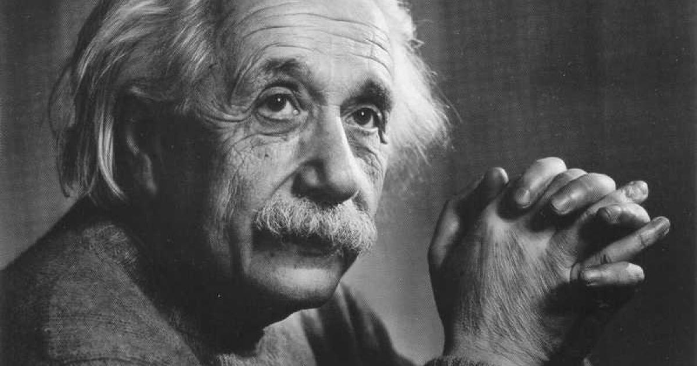

Angajament politico-social
După 1919, în urma observațiilor astronomice ale eclipsei din 1919, Einstein devine tot mai cunoscut pe plan mondial și, 1919 articolele elogioase din The Times și The New York Times îl fac tot mai cunoscut pe plan mondial. În același an, 1919, Einstein poartă o discuție asupra sionismului cu Kurt Blumenfeld, lider al Organizației Sioniste Mondiale. Vizitele sale în orice parte a Terrei au devenit evenimente naționale; fotografii și reporterii îl urmăreau peste tot.
Einstein și-a folosit renumele pentru a-și propaga propriile sale vederi politice și sociale. Cele două mișcări sociale care au primit întregul său sprijin au fost pacifismul și sionismul. Astfel în 1919, alături de Maksim Gorki, Henri Barbusse și Rabindranath Tagore, semnează o proclamație pentru libertatea omului.
În timpul Primului Război Mondial a fost unul din puținii savanți germani care au condamnat public implicarea Germaniei în război. Astfel, chiar în anul declanșării războiului, 1914, Einstein semnează o proclamație împotriva acestuia, Manifest către europeni. În anul următor, 1915, aderă la mișcarea pacifistă "New Fatherland League".
La încheierea marii conflagrații mondiale, în 1918, Einstein susține cauza Republicii de la Weimar.
În 1923 vizitează Palestina, pe atunci sub mandat britanic, unde este primit de guvernator și în coloniile evreiești. Pe Muntele Scopus inaugurează Universitatea Ebraică din Ierusalim, un vis mai vechi la materializarea căruia a contribuit personal prin strângeri de fonduri; savantul o vedea ca instituție deschisă tuturor evreilor care în Europa erau respinși de naționalismul endemic pe motive etnico-religioase și, care în opinia lui, ar deveni cea mai mare realizare în Palestina după distrugerea Templului din Ierusalim. Împlinirea visului einsteinian de a vedea Universitatea creată, este însă umbrită de faptul că în fruntea așezământului este pus un rabin; ca reacție Einstein refuză să predea acolo, considerând ca instituția trebuie să rămână un loc de cercetare liber.
Einstein a fost ținta unor numeroase atacuri antisemite în Germania. Chiar și teoriile sale științifice au fost ridiculizate în public, inclusiv Teoria relativității ca fiind "negermane".
Cu venirea lui Hitler la putere în 1933, Einstein, care se afla în vizită în USA s-a decis imediat să emigreze. A primit o funcție la Institute for Advanced Study, în Princeton, New Jersey.
Einstein a regretat profund faptul că descoperirile sale au fost utilizate pentru crearea bombei atomice, avertizând cu privire la pericolele pe care le prezintă armele nucleare. Din acest motiv s-a implicat nu numai în promovarea sionismului, ci și în mișcarea pentru pace. Astfel că în 1933 publică scrierea-manifest Why War? ("De ce război?").
În 1934 publică colecția de eseuri The World As I See It („Lumea așa cum o văd").
În fața imensei amenințări la adresa umanității venită din partea regimului nazist din Germania, Einstein renunță la poziția sa pacifistă și, în 1939, îndemnat de alți numeroși fizicieni, trimite celebra scrisoare către președintele Americii Franklin Delano Roosevelt, insistând asupra necesității producerii bombei atomice, întrucât exista posibilitatea ca și guvernul german să urmeze această cale. Scrisoarea lui Einstein a ajutat la grăbirea eforturilor pentru obținerea bombei atomice în Statele Unite și în 1944 se inițiază Proiectul Manhattan de cercetare în domeniul atomic. Einstein nu a avut nici un rol direct sau personal în fabricarea acesteia.
În 1944, manuscrisele celebrelor sale lucrări scrise în 1905 privind Teoria Relativității sunt vândute la licitație, în Kansas City, pentru 6 milioane de dolari, ca o contribuție pentru efortul de război american.
În 1945, Einstein își manifestă indignarea față de bombardarea orașelor Hiroshima și Nagasaki.
După război, Einstein s-a angajat pentru cauza dezarmării internaționale și a unei guvernări mondiale.
În 1948, Einstein, suporter activ al sionismului, salută cu entuziasm crearea statului Israel dar, patru ani mai târziu, în 1952, când David Ben-Gurion îi oferă președinția statului Israel, el o refuză.
În 1955, Einstein semnează împreună cu Bertrand Russel, o proclamație împotriva amenințării nucleare.